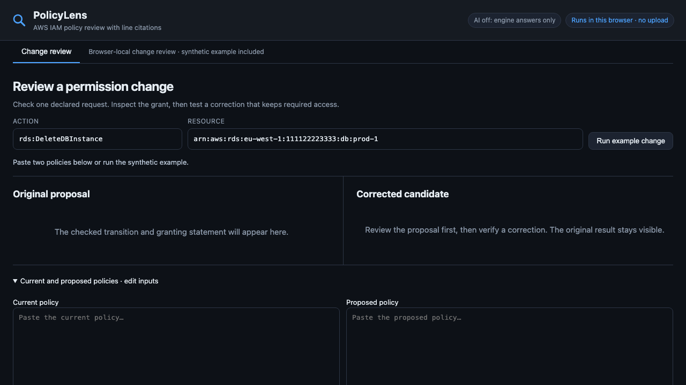
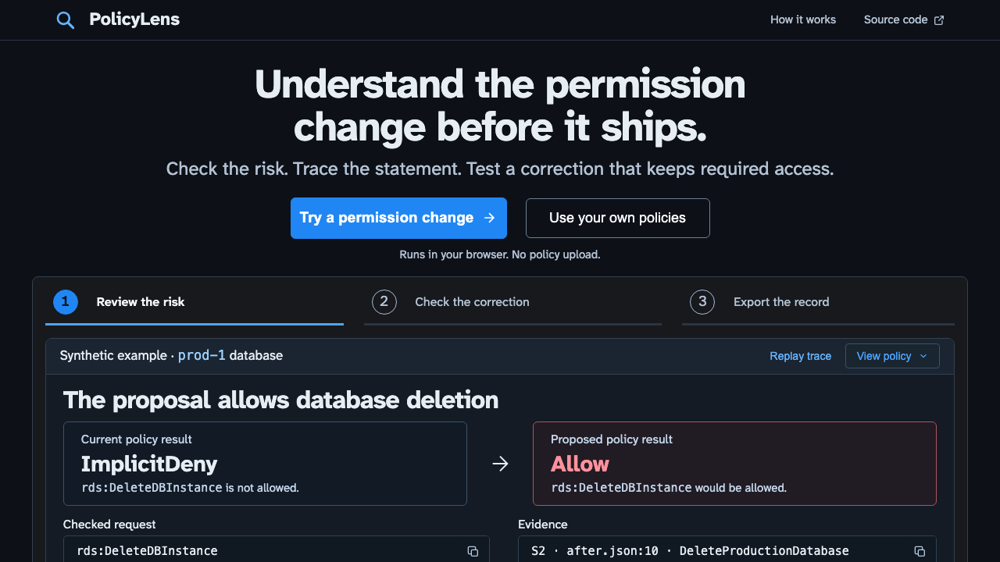

Make a permission change understandable before it ships
A product landing and real-engine demo explain introduced access, its source, a checked correction and the portable evidence record.
The problem
A policy diff shows edited JSON, but a reviewer needs to know whether a sensitive request became reachable and whether the correction preserves required access.
Before and after
Actual product-entry captures at 1280 × 720. The before view opens on empty editors; the after view explains the job and runs the labelled synthetic example.




Screenshots show the interaction change. They do not establish time saved, adoption or a measured business outcome.
What changed
Before. The working review opened on empty policy editors, technical fields and unfilled result regions. A first-time visitor had to infer the product’s value before trying it.
After. The landing explains the consequence and offers a three-stage review: inspect introduced access, check a correction, then export the evidence. The example uses the real engine. A source-trace replay has a reduced-motion alternative; keyboard chapter controls, source copying and separate own-policy work support exploration. The original stopped proposal remains distinct from the corrected result.
The earlier workflow iteration remains inspectable: original workflow and first correction workbench. New matched-task captures: review before and review after.


Complete journey
- Follow the synthetic example through risk, source evidence, correction and export. The browser computes the results; the demo is not a prerecorded animation.
- Choose Use your own policies, then open or paste current and proposed JSON with a declared action, resource and condition context.
- Inspect the stop/review/pass outcome and granting statement with its source line.
- Verify a corrected candidate. It must close the declared risk, preserve definite required access and avoid introducing a high or critical finding.
- Export JSON with original and corrected evidence, identities and explicit limits. The published demo runs its deterministic engine in your browser without uploading policies.
Evidence and practical value
Inspect the exported synthetic review JSON · See the verified correction on a phone

The example cites S2 at after.json:10 for the added rds:DeleteDBInstance grant. The corrected candidate removes that access while retaining s3:GetObject on the report. Validation retains the existing engine/module tests, authored 55-case benchmark and six captured grounding expectations. Browser journeys cover the product entry, real-engine correction and export, own files, invalid inputs, missing required access, stale results, late responses, navigation, source copying, phones and reduced motion. These are authored checks, not independent AWS parity evidence or live-model evaluation.
The demonstrated value is an understandable, inspectable review handoff: a reviewer can see what the checked change allows, why the engine says so, whether a candidate preserves required access and what the exported record contains. Practitioner demand, adoption and measured business benefit remain unvalidated.
Limits
The supplied documents and declared requests define the scope. SCPs, permission boundaries, session policies and cross-account interactions are excluded. AWS Access Analyzer already checks for new access; PolicyLens offers a smaller local review workflow. Independent AWS simulator comparison remains outstanding. The public browser demo has no AI or account-analysis service.
Independent public project by Matthew Paver. Synthetic demonstrations, updated 23 October 2026. No client deployment or measured commercial result is claimed.